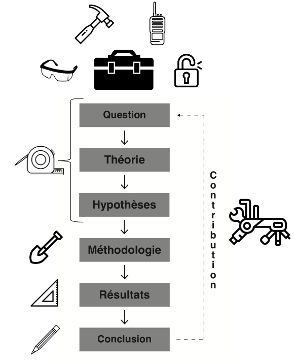
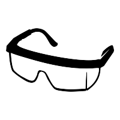
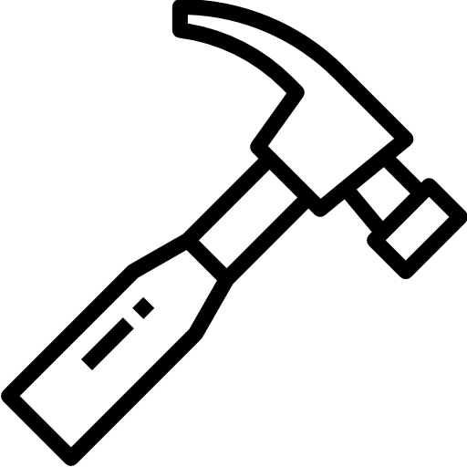
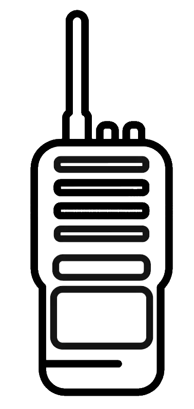
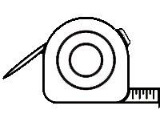
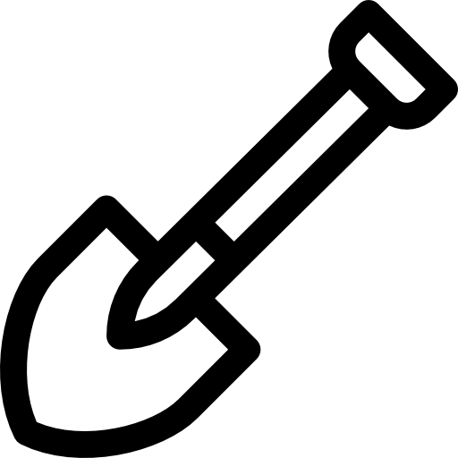
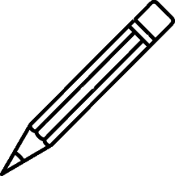
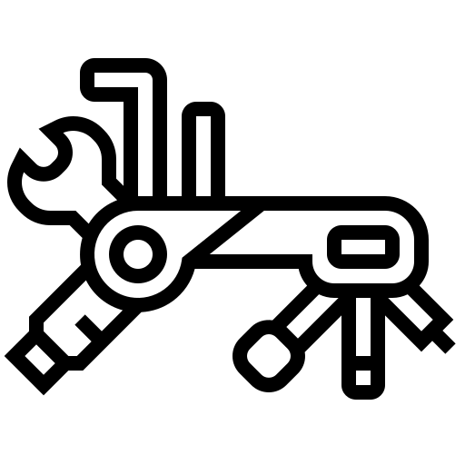

Prélude
Alexis Bibeau-Gagnon (Université McGill)
Adrien Cloutier (Université Laval)
Yannick Dufresne (Université Laval)
Le premier conseil que nous donnons systématiquement à toute personne qui entame une carrière en recherche : apprenez à gérer votre temps. L’entrée dans le monde de la recherche en sciences sociales s’accompagne d’un paradoxe familier : il est tout à fait possible de dédier un nombre d’heures considérable à la recherche, tout en faisant un usage inefficace de ce temps. Il est trop commun de voir des gens s’exténuer à multiplier les tâches, convaincus que le fait d’être occupé équivaut au fait de progresser. L’insécurité est omniprésente dans le monde académique. Devant l’immensité de la connaissance et des compétences possibles, on oscille entre le syndrome de l’imposteur et un narcissisme défensif. Ce vertige des possibilités nous pousse, parfois étrangement, à nous accrocher à ce que nous connaissons déjà et à rationaliser nos angles morts. Ce réflexe est compréhensible (et très humain), mais il est coûteux. Et dans un contexte où les outils de recherche se multiplient et se transforment à une vitesse sans précédent, il est devenu franchement risqué.
Les outils de recherche ont un potentiel transformatif immense pour le travail scientifique. Mais ils représentent également de redoutables gouffres de temps. Ça demande du courage de remettre en question ses manières de faire de la recherche. L’apprentissage de nouveaux outils nous force à réviser des habitudes parfois ancrées depuis longtemps. Beaucoup de chercheurs continuent de travailler avec l’équivalent académique d’un vieux marteau simplement parce que ça fonctionne « assez bien ». Un marteau est très utile et son utilisation est largement répandue dans la population, mais est-ce qu’un apprenti charpentier ne devrait pas apprendre à maîtriser des outils plus spécialisés comme une cloueuse pneumatique s’il veut en faire un métier ? Il semble, en effet, judicieux de sélectionner les outils optimaux qui nous permettront d’exceller dans les tâches spécifiques liées à notre travail. Et cela n’est pas différent pour la recherche.
Ce livre défend l’idée que la maîtrise des outils numériques est devenue indispensable pour faire de la recherche rigoureuse, reproductible et transparente. Leur apprentissage offre un avantage considérable à ceux qui se destinent à une carrière en recherche, dans le monde universitaire comme ailleurs.
L’objectif de ce livre est aussi d’éliminer les barrières à l’utilisation de certaines méthodes de recherche. Nous ne prenons pas parti dans le clivage qualitatif/quantitatif. Notre vision repose plutôt sur l’idée que les chercheurs en sciences sociales doivent utiliser les méthodes les plus appropriées pour répondre à leurs questions de recherche (Shapiro, 2002). Certaines questions nécessitent l’utilisation de modèles statistiques complexes, d’autres des entretiens, des archives ou d’un marteau ! Il n’y a pas de hiérarchie de méthodes. La recherche est comme une lampe de poche qui éclaire un phénomène, et la multiplication des angles d’éclairage ne peut qu’être bénéfique à notre savoir collectif.
Toutefois, il existe des méthodes plus ou moins appropriées selon les questions de recherche, et aucune formation ne devrait restreindre ces choix. En ce sens, nous croyons fermement que la formation aux outils de recherche peut permettre à tous d’avoir une boîte à outils suffisamment fournie pour choisir la meilleure méthode afin de répondre aux questions de recherche qui les intéressent. L’apprentissage des outils permet ainsi d’éviter des choix méthodologiques sous-optimaux qui sont faits non par conviction, mais par manque de compétences techniques.
Ce livre est ancré dans les sciences sociales. C’est son contexte de naissance, son terrain naturel, et le cadre de référence de ses exemples. Mais les outils qu’il présente sont fondamentalement interdisciplinaires. R, Git, Zotero, Quarto ou l’intelligence artificielle ne connaissent pas les frontières entre la sociologie, l’histoire, la médecine moléculaire, la santé publique, le droit ou l’éducation. Des chercheurs de toutes ces disciplines les utilisent quotidiennement, pour tenter de répondre à des questions radicalement différentes. Le lecteur issu d’une discipline voisine y trouvera tout autant son compte. Les exemples y sont peut-être moins nombreux dans son domaine spécifique, mais les outils, eux, lui sont communs.
L’ère numérique a fait exploser le nombre de nouveaux outils permettant de collecter, de gérer et d’analyser le volume lui aussi croissant de données disponibles. La rapidité d’innovation technique dans ce domaine peut donner le vertige. Gestion de données massives, extraction automatisée, plateformes collaboratives, langages de programmation, génération de graphiques visuels, intelligence artificielle, etc. Chaque besoin en recherche est devenu une opportunité pour développer un nouvel outil. Mais le problème, c’est qu’à force de proliférer, il existe aujourd’hui un océan d’outils qui comportent tous leur propre courbe d’apprentissage, leur propre spécificité et qui sont parfois incompatibles les uns avec les autres… C’est un océan difficile à naviguer. Comme c’est souvent le cas, la technologie peut simplifier nos vies mais, par manque de coordination, aussi finir par la complexifier.
L’arrivée de l’intelligence artificielle générative a ajouté une nouvelle couche à ce problème. Depuis 2022, des outils comme ChatGPT, Claude ou Copilot ont fait irruption dans les pratiques de recherche avec une rapidité déconcertante, soulevant une question que beaucoup se posent maintenant sincèrement : pourquoi investir des heures à apprendre R, Git ou Zotero si une IA peut tout faire à notre place ? C’est une question légitime. Et la réponse de ce livre est claire : parce que l’IA amplifie un chercheur compétent. Elle ne remplace pas les fondations. Un chercheur qui ne maîtrise pas ses outils ne sera pas libéré par l’IA. Il en sera dépendant, sans pouvoir évaluer la qualité de ce qu’elle produit. La maîtrise des outils numériques n’est pas rendue obsolète par l’IA. Au contraire, elle est devenue la condition pour en faire un usage éclairé.
Ce livre est né dans une salle de classe. Il est le fruit d’une expérience d’enseignement menée à la Chaire de leadership en enseignement des sciences sociales numériques (CLESSN) et au Centre d’analyse des politiques publiques (CAPP) de l’Université Laval, où le constat s’est imposé année après année : les étudiants en sciences sociales arrivent avec de bonnes questions, mais sans les outils pour y répondre efficacement. Cet ouvrage est notre tentative de combler ce fossé.
Huit ans. C’est le temps qu’il a fallu pour arriver jusqu’ici. Le contenu a été réécrit, retesté, parfois abandonné, souvent repris. Des outils que nous enseignions ont disparu ; d’autres ont émergé. La pandémie a tout bouleversé, puis l’intelligence artificielle générative a changé les règles du jeu en cours de route. Depuis 2024, le contenu de ce livre a pris la forme d’un cours officiel à l’Université Laval (POL-6078, Outils numériques en sciences sociales), où les étudiants contribuent directement au livre via des pull requests sur le dépôt GitHub du projet. Même quand leurs noms n’apparaissent pas dans le texte, il porte leur empreinte.
Ce livre a d’ailleurs une double vie. Il paraît en version imprimée aux Presses de l’Université Laval, une première édition officielle et figée, millésime 2027. Mais il vit aussi en libre accès sur GitHub, dans une version évolutive que la communauté enrichit au fil des générations d’étudiants. À notre connaissance, c’est une première pour les PUL : un même ouvrage fixé sur papier, objet de collection, témoin d’un moment précis dans le temps, création d’une équipe particulière, et continuellement mis à jour en ligne par ceux qui l’enseignent et l’apprennent.
Pourquoi imprimer un livre qui parle d’outils numériques ? Car nous passons déjà nos journées devant un écran, et la fatigue qui vient avec est bien réelle (Bailenson, 2021). Les étudiants nous en parlent, les professeurs aussi. Le papier a aussi des avantages qu’on avait un peu oubliés. On comprend mieux un texte lu sur papier que sur un écran, et cet écart s’est agrandi avec les années (Delgado et al., 2018). Écrire ses notes à la main aide à retenir ce qu’on apprend (Mueller & Oppenheimer, 2014). Un ordinateur ouvert en classe dérange d’ailleurs autant celui qui l’utilise que ses voisins (Sana et al., 2013). Chaque notification ajoute un peu de stress (Mark et al., 2008), et un stress qui s’installe nuit à la mémoire et à l’apprentissage (Lupien et al., 2009). Dans nos propres cours, nous sommes revenus au papier, au recueil et au crayon. Cal Newport appelle ça le travail en profondeur (le deep work) (Newport, 2016). C’est pour cette raison que l’édition imprimée se termine, à chaque chapitre, par deux pages de notes. Lisez le chapitre, essayez l’outil, puis écrivez ce que vous en retenez.
Ce livre est aussi rédigé en français, et ce choix n’est pas anodin. La quasi-totalité des ressources de qualité sur les outils numériques de recherche est disponible en anglais. Écrire ce livre en français est un acte délibéré de vulgarisation, à l’intention de toute la communauté scientifique francophone, au Québec et ailleurs1.
Le contenu du livre n’est pas non plus définitif. Il a été conçu pour évoluer avec les technologies, les usages, les changements dans la communauté. Ce qu’il pose, en revanche, a vocation à durer : une réflexion sur le choix de ses outils, et pourquoi cette réflexion est si souvent absente de la formation en sciences sociales. Généralement, on y apprend les méthodes. Rarement les outils. Et pourtant ce sont deux choses fondamentalement différentes : la méthode offre la recette, l’outil fournit l’équipement. L’un sans l’autre donne un chercheur à moitié équipé.
Sur le terrain, les résultats sont là. Depuis le lancement du cours sur les Outils numériques en sciences sociales, des étudiants ont décroché des contrats en recherche, en partie grâce aux compétences techniques acquises. Des messages de remerciement nous parviennent régulièrement. Le monde des outils numériques peut sembler rude au premier abord, la courbe d’apprentissage abrupte. Mais en y allant étape par étape, chapitre par chapitre, on entre dans un univers riche, vibrant et profondément utile pour toute une carrière.
Ce qui distingue aussi cet ouvrage de la plupart des manuels, c’est que tous les auteurs des chapitres étaient encore étudiants au moment de la rédaction. Les chapitres qui suivent ont été rédigés par des personnes qui ont elles-mêmes traversé la courbe d’apprentissage de ces outils, souvent sans formation préalable. Nous espérons que cette proximité avec l’expérience de l’apprentissage rendra le livre plus utile à ceux qui en sont au même point.
C’est aussi pourquoi cet ouvrage ne prétend pas être exhaustif. Il ne recense pas tous les outils disponibles, ne couvre pas toutes les méthodes, et ne remplace pas une formation approfondie en statistiques ou en méthodologie de recherche. C’est une sélection assumée : les auteurs ont fait des choix, les ont défendus, et les assument. Le critère ultime n’était pas la popularité ni la nouveauté, mais la valeur réelle des outils pour un chercheur en sciences sociales qui veut travailler de manière rigoureuse, reproductible et autonome.
Plus précisément, le choix des outils présentés dans ce livre repose sur six critères (détaillés au Chapitre 1) :
- Accessibilité (Qui peut accéder à cet outil, et à quel coût ?) ;
- Existence d’une communauté active (En cas de problème, vers quelle communauté se tourner ?) ;
- Popularité dans la discipline (Cet outil facilite-t-il la collaboration avec les pairs ?) ;
- Compatibilité avec d’autres outils (S’intègre-t-il dans un flux de travaux existant ?) ;
- Transparence et réplicabilité (Un collègue pourrait-il reproduire un travail avec cet outil ?) ;
- Adaptabilité et flexibilité (Évoluera-t-il avec les besoins ?).
Ces critères sont techniques, mais le choix d’un outil n’est jamais un acte neutre. Derrière chaque décision se cache une posture : certains outils concentrent le pouvoir entre les mains de quelques entreprises, tandis que d’autres le distribuent à une communauté ouverte. Certains rendent la recherche reproductible et vérifiable ; d’autres l’opacifient. Choisir, ou ne pas choisir, c’est donc prendre position. Le Chapitre 1 développe cette réflexion en profondeur, à travers la philosophie du logiciel libre et du code source ouvert. Cette philosophie traverse aussi le reste du livre. Les enjeux éthiques de la collecte de données (au Chapitre 6) ou de l’usage de l’intelligence artificielle (au Chapitre 9) en sont des manifestations concrètes.
La reproductibilité d’une recherche passe aussi par la citation explicite des outils utilisés et la transparence sur les raisons de leur choix. Cette pratique reste pourtant rare dans les publications en sciences sociales (Arel-Bundock & McCrain, 2023). Ce livre en fait un principe structurant : chaque outil présenté est accompagné des raisons qui ont guidé sa sélection. Nous encourageons d’ailleurs les chercheurs à adopter cette même rigueur dans leurs propres travaux. Citer les logiciels et outils utilisés dans une publication scientifique, c’est permettre à d’autres de reproduire, d’évaluer et de bâtir sur ce travail. Cette transparence est elle-même une forme de responsabilité scientifique.
Ce livre ne fait pas exception. Il est écrit en Markdown et en LaTeX, composé avec Quarto, versionné avec Git et publié en libre accès sur GitHub ; sa bibliographie est tenue dans Zotero. Pendant la révision, des outils d’intelligence artificielle ont servi à vérifier la cohérence entre les chapitres, à relever des répétitions et des erreurs de langue, et à proposer des reformulations. Chaque proposition a été acceptée ou refusée par les auteurs, qui restent responsables du texte. Le propos du livre, lui, est issu d’un travail inductif, de huit ans d’apprentissage, d’enseignement, d’essais, d’erreurs, et précède nombre de ces outils. Le Chapitre 9 expose cette distinction entre produire et peaufiner.
Ainsi, les réponses aux questions qui guident le choix des outils varient selon le contexte : la discipline, l’institution, les valeurs, le type de recherche, la taille de l’équipe, les ressources disponibles, les technologies émergentes. Un chercheur en sociologie qualitative, une équipe de science politique computationnelle ou un étudiant au doctorat en psychologie dans une université avec des ressources limitées n’arriveront pas nécessairement aux mêmes choix. C’est normal, et c’est même souhaitable. Les choix éditoriaux de ce livre reflètent un contexte précis : les sciences sociales numériques, au milieu des années 2020, pour un lectorat francophone en début de carrière. Dans dix ans, certaines de nos recommandations auront peut-être changé. Mais les six critères, eux, resteront pertinents.
Chaque chapitre de ce livre est structuré en trois sections. Le Point d’observation situe l’outil dans son contexte historique et conceptuel. L’Arpentage et le choix éditorial présente les options disponibles, les compare selon les six critères, et explique les choix retenus dans ce livre et les raisons qui les motivent. Le Manuel d’instruction offre un guide pratique pour commencer à utiliser l’outil retenu. Cette structure permet au lecteur de suivre notre raisonnement pas à pas.
Le livre est également construit en trois sections, organisé comme on bâtit une maison.
Les Fondations (chapitres 1 à 4) posent les bases sans lesquelles rien de solide ne tient : choisir des outils libres et transparents, apprendre à programmer, organiser son flux de travaux et gérer ses données. On ne bâtit pas sur du sable.
La Structure (chapitres 5 à 8) couvre les étapes centrales du cycle de recherche : synthétiser la littérature, collecter des données et les visualiser, et puis rédiger. C’est la charpente du projet scientifique.
La Finition (chapitre 9) est consacrée à l’intelligence artificielle. Ce n’est pas un hasard si ce chapitre arrive en dernier. L’IA ne doit pas réaliser le travail à votre place. Elle peut aider à le peaufiner, à augmenter sa validité et sa fiabilité, si elle est bien intégrée. Mais une belle finition ne pourra jamais sauver une charpente bancale.
De la question initiale à la contribution scientifique finale, chaque étape du processus de recherche mobilise différents outils. C’est ce que représente la figure ci-dessous, qui constitue notre boussole éditoriale pour l’ensemble de ce livre.

Voici comment chaque chapitre s’inscrit dans cette progression. Chacun est associé à un objet de la boîte à outils, des lunettes au coffre.

Le monde du libre. Le Chapitre 1 pose la question fondamentale : avec quels outils choisit-on de faire de la science, et pourquoi ? Les lunettes symbolisent le regard critique et philosophique qu’on pose sur les outils eux-mêmes : distinguer le logiciel libre du logiciel propriétaire, comprendre les valeurs qui les sous-tendent, juger leur compatibilité avec les exigences de la science ouverte. Ce chapitre pose aussi la distinction fondamentale entre outils et méthodes.
Outils de programmation. La programmation est l’outil qui traverse tout le cycle de recherche. Comme le marteau sur un chantier, elle est présente à chaque étape : collecter des données, les transformer, les analyser, les visualiser, les communiquer. Le Chapitre 2 explique pourquoi R s’est imposé comme le langage de référence en sciences sociales et propose une première immersion dans son environnement et sa logique.
Outils de gestion de projet. Faire de la recherche, c’est souvent gérer de nombreuses tâches en parallèle : écrire, collaborer, déléguer, suivre, livrer. Le talkie-walkie symbolise cette coordination constante entre les membres d’une équipe, entre les projets et les échéances. Le Chapitre 3 introduit la méthode Agile et ses outils (comme Notion) pour structurer un flux de travaux efficace, que l’on travaille seul ou en équipe.Outils de gestion des données. Gérer ses données n’est pas une formalité administrative. C’est une décision scientifique fondatrice, prise dès le premier jour, qui engage la transparence et la reproductibilité de toute une recherche. Le Chapitre 4 outille cette discipline avec Git, GitHub et les dépôts institutionnels. Le cadenas ouvert en résume l’esprit : une science qui protège sans se fermer, qui structure pour que d’autres puissent vérifier, reproduire et bâtir.

Outils de synthèse de la connaissance. Le Chapitre 5 défend l’idée que la revue de littérature est une contribution scientifique à part entière. Le ruban à mesurer sert à prendre l’étendue de ce qui existe avant de bâtir, comme la synthèse de la connaissance qui mesure l’état d’un champ, en relève les lacunes, et y situe une nouvelle contribution. Le chapitre présente Covidence et Zotero, en insistant sur la traçabilité et la reproductibilité du processus.
Outils de collecte de données. Le Chapitre 6 explore les multiples façons de collecter des données à l’ère numérique. La pelle creuse : elle symbolise l’acte central de la recherche empirique, la recherche des données. Le chapitre couvre les sondages en ligne (Qualtrics, REDCap), les bases de données médiatiques, et le web scraping avecrvest, tout en abordant les enjeux éthiques de la collecte numérique.
 Outils de visualisation graphique. Le Chapitre 7 couvre la visualisation de bout en bout, de l’exploration initiale jusqu’à la communication des résultats, en s’appuyant sur
Outils de visualisation graphique. Le Chapitre 7 couvre la visualisation de bout en bout, de l’exploration initiale jusqu’à la communication des résultats, en s’appuyant sur ggplot2 et sa grammaire des graphiques. C’est l’équerre qui mesure avec précision, calcule les angles et trace des lignes droites, pour offrir des résultats lisibles et communicables.

Outils de rédaction. Le Chapitre 8 présente les langages de balisage (LaTeX,Quarto, Markdown) comme alternatives aux traitements de texte traditionnels et propriétaires. Le crayon écrit : il représente l’acte final du cycle, mettre en forme et publier sa contribution. Plus propres, plus stables, plus reproductibles, ces outils permettent une rédaction scientifique à la hauteur des exigences actuelles.

Outils d’intelligence artificielle. Le Chapitre 9 présente les usages de l’intelligence artificielle en recherche. L’outil multifonction traverse le cycle en entier, comme l’IA peut intervenir à chaque étape, de la revue de littérature à la rédaction. Mais cette puissance présuppose tout ce qui précède. Le chapitre invite le chercheur à développer un regard critique sur ces outils dont les biais, les limites et les implications épistémologiques sont encore mal compris.L’ordinateur. L’Annexe A, probablement à consulter d’emblée pour certains chercheurs en herbe, démystifie l’environnement matériel de la recherche numérique. Un bon coffre est une base nécessaire pour entreposer tous les outils. RAM, processeur, stockage : cette annexe explique comment choisir une machine adaptée aux exigences des sciences sociales numériques.
Avant les étudiants, il y a eu des collègues et des amis. Axel Déry, Nadjim Fréchet, Olivier Banville, Flavie Lachance, Judith Bourque, Justine Béchard, William Poirier, Maria Alexandrov, Patrick Poncet et Camille Tremblay-Antoine ont travaillé sur les premières versions de ce contenu, souvent sans savoir ce qu’il deviendrait. Ce livre leur doit beaucoup.
Rien de tout cela n’aurait évolué sans les étudiants du cours POL-6078, qui ont contribué directement à son amélioration : une correction ici, une suggestion là, parfois une refonte complète d’un passage. C’est cette boucle entre l’enseignement et l’écriture qui fait de ce livre ce qu’il est. Merci à ces contributeurs (pseudonymes GitHub) : ChloeBlx, JanelLaplante, JuliaDulude, Juma2985, Lamiko17, LoicRobinson, MADUP212, NCA0226, NicholasGaudet, Noboe2025, Velomicka, VictorVerville, WilliamBeaudry, adja925, amedee-account, chiara032003, jd-ODD, katelinevalentin1-netizen, laurianne-martin, sarahdb1, theofaitdodo, tomlaf12, watellephil, zahramayo.
C’est à eux, et à tous ceux qui viendront après, que ce livre est dédié.
L’utilisation du français apporte certains défis, notamment dans la façon dont nous désignons les personnes. Nous privilégions les termes collectifs et neutres, « le lectorat » plutôt que « le lecteur ou la lectrice ». Quand la phrase ne s’y prête pas, nous employons un terme épicène, et quand celui-ci alourdit le texte, le masculin générique, qui désigne alors indifféremment toutes les personnes. Nous n’employons ni les doublets complets, ni les formes tronquées par un point médian. Bien sûr, ce livre s’adresse à toutes les personnes s’intéressant à la recherche scientifique.↩︎